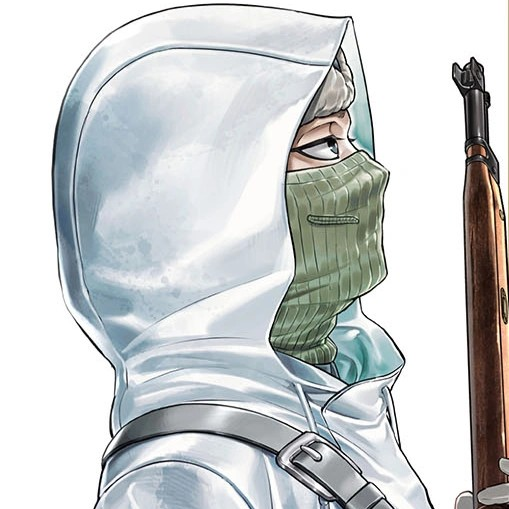

White Death
Five hundred and five confirmed — and the one bullet that found him only made him harder to kill.

White Death
Five hundred and five confirmed — and the one bullet that found him only made him harder to kill.
Feature map
Level-by-level features, as the figure refined them.
Isänmaalle Flesh Round
Loading: 1 CE + PB hit points (see text).
Your rifle loads your own blood and cursed breath — the body as ammunition. Loading a Flesh Round costs 1 CE and PB hit points; sacrificed hit points cannot be restored until the start of your next turn. Shots you fire while stationary ignore long-range disadvantage. The Tally: every enemy you can see is tracked independently, Unknown → Bearing → Located. Each time you hit a tracked enemy with a rifle attack, they advance one stage. Bearing: your rifle attacks against them ignore half cover. Located: your rifle attacks against them ignore three-quarters cover and add your PB to the damage roll. You do not see targets. You see stages of knowing.
Sniper's Nest
Action · 1 CE.
You prepare a firing position. While you remain within 5 feet of your Nest, firing your rifle does not end your Stealth — but your shots never auto-advance a target from Bearing to Located. You trade knowledge for invisibility. You are the snow. The snow shoots back.
Kidney — Ilmatar's Piercing Hail
Part of a Flesh Round · −10% max HP (see text).
Organ rounds are true sacrifices: the max-HP cost cannot be restored during the encounter — no RCT, healing, temporary hit points, or other feature restores it; a long rest restores all sacrificed organs. (Agree the body-horror narration at character creation — the costs are self-directed.) Kidney — Ilmatar: reduce your max HP by 10%. Your Flesh Round deals an extra 2d6 piercing, then hail bursts 20 feet around the impact: each creature there makes a Dexterity save against your technique DC or takes 4d6 piercing (5d6 at L11, 6d6 at L18).
Liver — Lemminkäinen, Who Passed Through Death
Part of a Flesh Round · −15% max HP.
Reduce your max HP by 15%. You fire one round along a visible line out to your rifle's maximum range, making a single attack roll against every creature in the line — each creature whose AC is beaten is hit. The first hit deals an extra 3d6 piercing; later hits deal an extra 2d6. The round ignores cover and ignores piercing resistance. Iron sights, not a scope: a scope glints, and a glint is death.
Spleen — Mielikki's Interdiction
Reaction · −15% max HP.
The veto. When a creature you can see begins an action — including a legendary action, but not a lair action or an initiative-20 Domain effect — you may use your reaction to fire before it resolves. Reduce your max HP by 15%. If your shot leaves the target at 0 hit points or incapacitated, the triggering action never occurs: the veto that unmakes the act it answers.
Pancreas — Ukonvasara, the Thunder That Cannot Be Stopped
Action · −20% max HP.
Reduce your max HP by 20%. One Flesh Round: rifle damage + 8d6 piercing. No creature may use a reaction in response to the shot. It ignores piercing resistance (immunity becomes resistance), and it deals no less than half its rolled damage unless the reduction comes from a Domain effect.
543
Passive.
You know which deaths are final. When a creature you can see falls to 0 hit points, you immediately know whether the death is true — feigned death, regeneration, and refusals do not fool you. In a war where half the dead refuse to stay down, that knowledge is worth more than the rifle.
The Nest Remembers
Passive.
When you voluntarily leave a Sniper's Nest, every enemy you are tracking advances one information stage (Unknown → Bearing → Located) — the angles you memorized stay with you — and allies who spend 1 minute studying the abandoned Nest learn your tracked stages. The snow keeps your sight-lines.
Maximum, Domain, or equivalent.
Capstone material.
The 543rd Bullet / Salvation
Your max HP becomes 1; your current HP becomes 1. You gain no hit points or temporary hit points until the shot resolves, and you cannot move voluntarily. One rifle attack: no disadvantage, ignores cover except total cover, ignores resistance (immunity becomes resistance), and deals no less than half its rolled damage unless the reduction comes from a Domain effect. On hit: rifle damage + 12d6 piercing, then the target makes a Constitution save against your technique DC or suffers a Mortal Wound — its max HP is reduced by the piercing damage dealt, until the end of your next turn. After the shot resolves, you fall unconscious and begin making death saving throws.
The Face That Lived
The bullet that found him only made him harder to kill. When you are reduced to 0 hit points, you are reduced to 1 hit point instead — and every enemy you are tracking advances one information stage (Unknown → Bearing → Located): the snow learning their faces at last.
Build-defining options.
Historical-figure techniques grant no feats — the figure's art is complete as written, and the builder's feat picker excludes these techniques. Take the progression as the build.